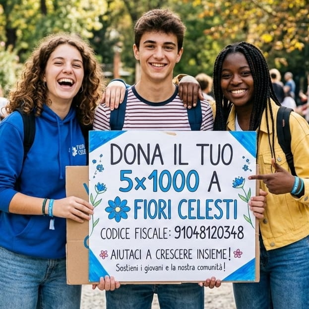

Sostieni i nostri laboratori artigianali e la Gelateria Artigianale Fiori Celesti. Ogni contributo ci permette di continuare a offrire percorsi di inclusione sociale attraverso il lavoro manuale e le pratiche zen.
Dona il tuo 5x1000 a Fiori Celesti APS — codice fiscale 91048120348. Non ti costa nulla in più: è una quota dell'IRPEF già versata che puoi destinare gratuitamente alla nostra associazione.
Effettua un bonifico bancario sul nostro conto corrente:
Intestato a: FIORI CELESTI APS
IBAN: IT17Y0623065903000036141019
Causale: EROGAZIONE LIBERALE
Dona il tuo 5x1000 a Fiori Celesti APS:
Codice Fiscale: 91048120348
Nella dichiarazione dei redditi, firma nel riquadro "Sostegno del volontariato" e indica il nostro codice fiscale.
Tutte le donazioni a Fiori Celesti APS sono fiscalmente deducibili secondo le normative vigenti. Conserva la ricevuta del bonifico o della donazione per la dichiarazione dei redditi.
Viale Fidenza 12G
Tabiano Bagni (PR)